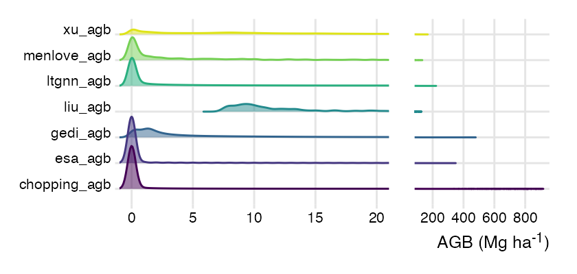
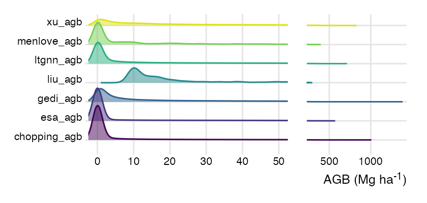
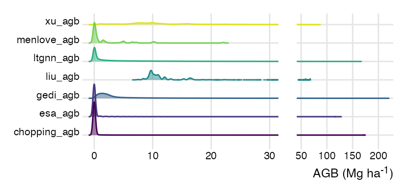

| subset | product | min | median | mean | max |
|---|---|---|---|---|---|
| AZ | ESA CCI | 0.00 | 0.00 | 5.84 | 348.00 |
| AZ | Chopping et al. | 0.00 | 0.00 | 7.97 | 935.42 |
| AZ | Liu et al. | 7.19 | 12.05 | 19.62 | 107.31 |
| AZ | Xu et al. | 0.00 | 13.12 | 24.04 | 166.85 |
| AZ | LT-GNN | 0.00 | 0.61 | 12.81 | 220.54 |
| AZ | Menlove & Healey | 0.00 | 1.46 | 9.09 | 131.46 |
| AZ | GEDI L4B | 0.00 | 3.62 | 14.38 | 477.73 |
| AZ | median | 0.00 | 1.75 | 10.67 | 173.38 |
| CA | ESA CCI | 0.00 | 0.00 | 42.02 | 559.00 |
| CA | Chopping et al. | 0.00 | 0.00 | 45.21 | 999.00 |
| CA | Liu et al. | 6.37 | 17.78 | 42.48 | 296.03 |
| CA | Xu et al. | 0.00 | 46.15 | 100.28 | 818.49 |
| CA | LT-GNN | 0.00 | 8.62 | 59.57 | 702.02 |
| CA | Menlove & Healey | 0.00 | 7.23 | 50.42 | 385.14 |
| CA | GEDI L4B | 0.00 | 15.61 | 51.76 | 1,373.44 |
| CA | median | 0.00 | 9.86 | 49.77 | 606.91 |
| SRER | ESA CCI | 0.00 | 0.00 | 0.30 | 31.00 |
| SRER | Chopping et al. | 0.00 | 0.00 | 0.22 | 49.90 |
| SRER | Liu et al. | 11.93 | 11.93 | 11.93 | 11.93 |
| SRER | Xu et al. | 13.15 | 21.25 | 23.88 | 49.93 |
| SRER | LT-GNN | 0.00 | 6.86 | 7.99 | 76.55 |
| SRER | Menlove & Healey | 1.56 | 10.40 | 8.55 | 10.40 |
| SRER | GEDI L4B | 1.18 | 2.67 | 3.67 | 67.94 |
| SRER | median | 1.39 | 6.49 | 6.42 | 46.73 |
| Pima County | ESA CCI | 0.00 | 0.00 | 0.94 | 127.00 |
| Pima County | Chopping et al. | 0.00 | 0.00 | 1.42 | 175.72 |
| Pima County | Liu et al. | 8.10 | 11.43 | 14.95 | 67.42 |
| Pima County | Xu et al. | 0.00 | 10.39 | 13.71 | 89.37 |
| Pima County | LT-GNN | 0.00 | 1.01 | 6.26 | 165.87 |
| Pima County | Menlove & Healey | 0.00 | 0.12 | 1.77 | 22.04 |
| Pima County | GEDI L4B | 0.00 | 2.33 | 6.33 | 219.52 |
| Pima County | median | 0.00 | 1.23 | 3.64 | 108.00 |
AZ Carbon Stores
Data
So far the data products include:
| Product | Downloaded (including CA) | Wrangled |
|---|---|---|
| Xu AGBC | ✅ | ✅ |
| Liu AGBC | ✅ | ✅ |
| LT-GNN AGB | ✅ | ✅ |
| Chopping AGB | ✅ | ✅ |
| Menlove AGB | ✅ | ✅ |
| ESA CCI/GlobBiomass AGB v004 | ✅ | ✅ |
| GEDI L4B AGB v2.1 | ✅ | ✅ |
| Rangeland Analysis Platform (RAP) AGB | ✅ | ✅ |
RAP is a model product only for rangelands (i.e. annual or perennial grasses and forbs) and is not included in comparisons right now.
Figures
Section 2.1 shows all of the data products transformed to the same extent and resolution. Section 2.2 shows the median AGB across all products. Section 2.3 shows spatial distribution of uncertainty. Section 2.4 shows the differences in AGB distribution among data products.
Observations:
The Liu product doesn’t include any zeros
The Xu product has the largest area of low but not zero values
The ESA product has the greatest total range of values
The ESA product has some very high AGB pixels surrounded by very low (maybe zero?) AGB pixels—this may be an artifact of some kind?
AGB
Arizona

California

SRER

Pima County

Median
Arizona

California

SRER

Pima County

Standard Deviation
Arizona

California

SRER

Pima County

Data distribution
Density ridge plots are a good compact way to visualize this.
Note
It ended up being relatively easy to just do my own kernel density estimation, so now the ridgelines are correctly truncated at min and max without having to add a point to show the range of values.
Arizona

California

SRER
Pima County

Scatter plots
These plots are intended to compare each data product with the “gold standard” ESA product. These use a random sample of 200,000 pixels from each product. While it is technically possible to make these plots using the entire dataset, the result will be a dark black blob for all of them. 200,000 points is only ~0.5% (total non-NA pixels = 35,342,827).